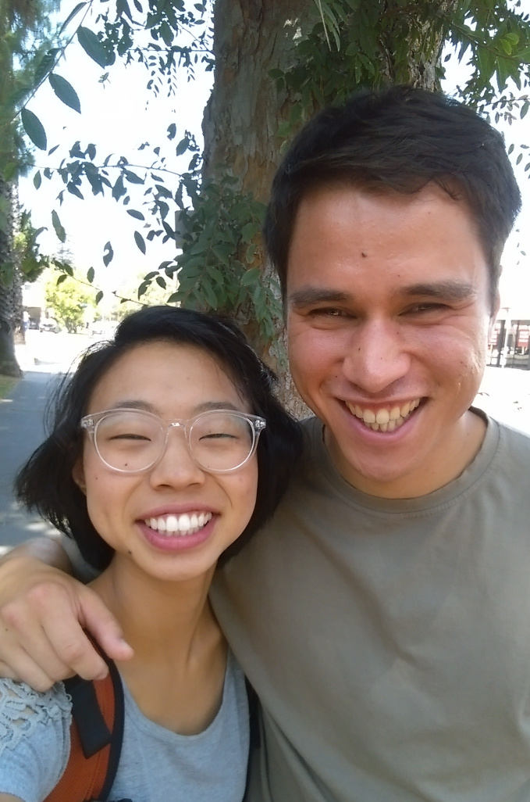

July Update

In previous updates, I mentioned wanting to possibly leave in October. However, this new relationship means that that the departure date will most likely have to be postponed.
To be clear, this isn’t totally her fault. As it turns out, Rebekah is actually open to the idea of getting married and leaving with me in October (“Where have you been all my life?!”). However, where things stand now with logistics and finances, most likely we will need to stay in the US and work for a while in order to save up some money before leaving. It’s hard to say at this point, as details are still coming together, but hopefully leaving in the first half of 2017 (?).
I could probably say more, but have to get back to work for now. :) As you can imagine, it’s been a busy month (a good enough excuse for the delayed newsletter?). I’d love for you to meet her sometime in person too though; send me an email and let’s set something up.
Prayer Requests (and Other Ways You Can Help)
In the meantime, your prayers are needed more than ever. Please pray:
- For wisdom for both of us and for our mentors as we move forward.
- That I would be able to find a job soon.
- That added time commitments and responsibilities would not get in the way of ministry as much as possible, both in the end result and in my heart.
For another way that you can help: Please let me know if you know of any jobs that…
- Make decent money
- Keeping in mind that “decent” is relative, especially for a recent seminary grad without any marketable skills…
- Don’t require an excessive amount of typing
- I somehow developed arthritic fingers during seminary…
- Would be good for somewhere between a 3 month - 1 year term
- I’m still hoping to potentially leave in January. But if the job is good enough, I might be open to staying for a full year.
- Are in the greater LA area.
- I have committed to helping out at my current church through October, so maybe could start something elsewhere after that, but until then need to stay in this area.
- Could help me learn a skill that I could also potentially use in the future.
- This would be a big plus also, but is not totally necessary.
Thanks again for your support,
Ryan